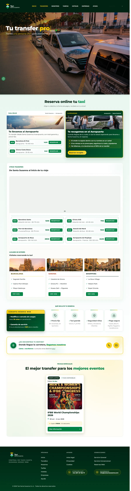
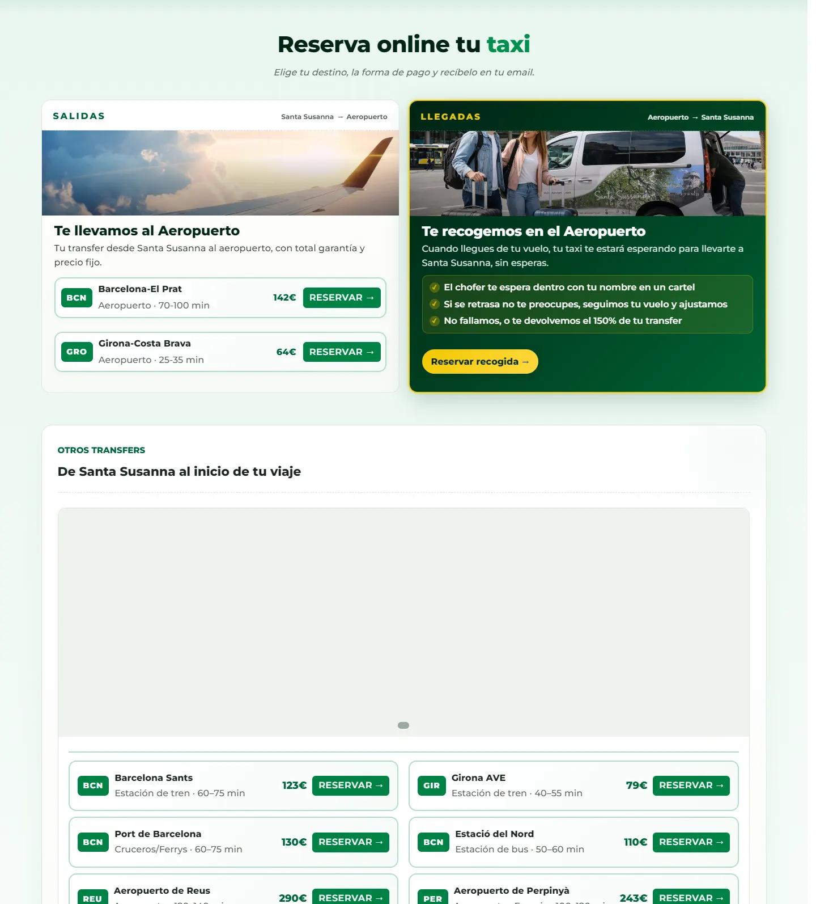
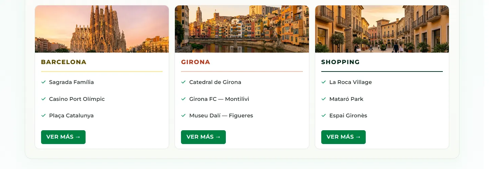
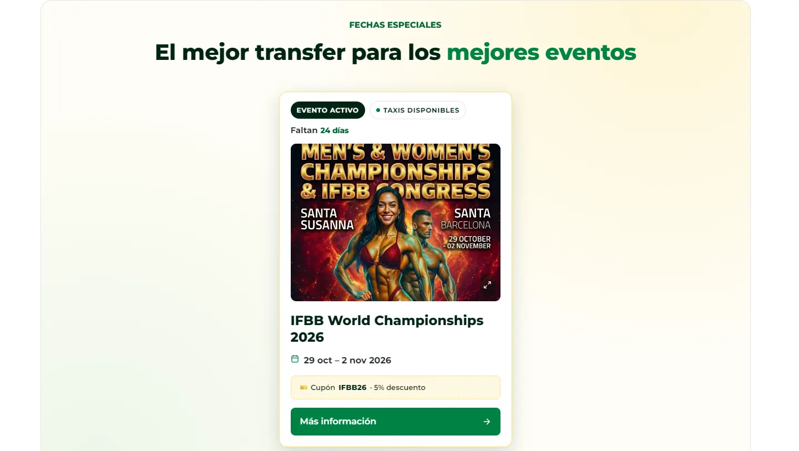
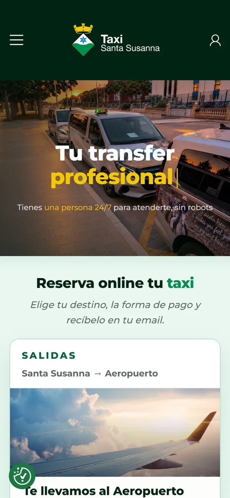
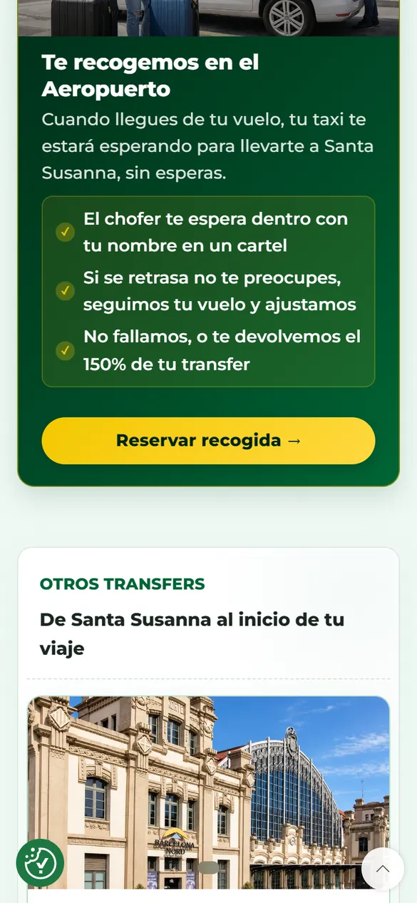
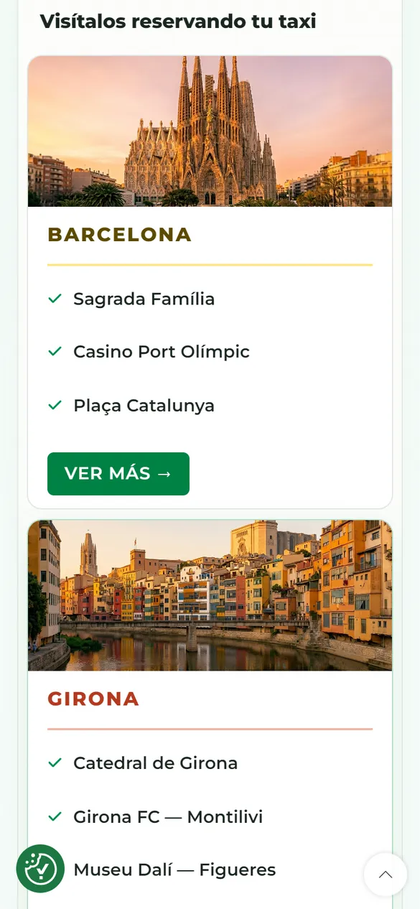
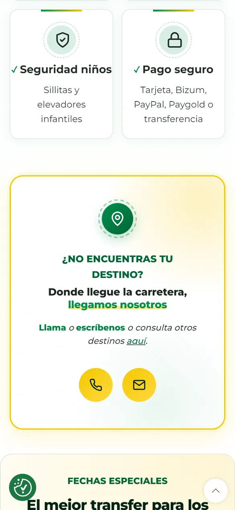

Caso 03 · Transporte
Taxi Santa Susanna
Reservas sin llamar. Un servicio de taxi local de la costa del Maresme que no existía en internet: ahora tiene web propia con reservas online, tarifas claras y cuatro idiomas para el turismo.

- 24/7reservas online, sin llamar
- 4idiomas: catalán, castellano, inglés y francés
- 0 €de comisión: reservas propias, sin plataformas
01 — El reto
Un buen servicio
que nadie encontraba.
Taxi Santa Susanna llevaba años trabajando con su flota local, pero su presencia digital era cero: ni web ni reservas online. Todo dependía del boca a boca.
Los turistas que llegaban a la costa buscaban «taxi Santa Susanna» o «transfer aeropuerto Barcelona» y no lo encontraban, mientras la competencia y las apps se quedaban con esas búsquedas. El objetivo: una web que se encuentre en Google y que reserve sola.
Recorrido
La web,
de arriba abajo.
- 01Tu transfer, 24/7: la reserva arriba del todo.
- 02Salidas y trayectos con precio cerrado.
- 03Destinos y ciudades más pedidos.
- 04Ventajas, eventos y contacto.

02 — La solución
Seis decisiones
para reservar sin llamar.
-
01
Web orientada a reservar
Llamadas a la acción directas («reservar», «llamar») y tarifas a la vista. Pensada primero para el móvil.
-
02
Reservas online propias
Sistema de reservas con confirmación, sin comisiones de plataformas externas.
-
03
Trayectos con precio
Aeropuerto, Barcelona, Girona y destinos frecuentes con su tarifa, para decidir sin preguntar.
-
04
Cuatro idiomas
Catalán, castellano, inglés y francés, cada uno con su propio SEO, para el turismo internacional.
-
05
SEO local
Datos estructurados de servicio de taxi y negocio local, y contenido por zonas de la costa.
-
06
Confianza a la vista
Ventajas del servicio, pago seguro y atención por una persona, no por un robot.

03 — El diseño
Verde de la costa,
amarillo de taxi.
Montserrat Extra BoldTitulares: rotundos y legibles
Montserrat RegularTexto: la misma familia, más calma
- Verde noche
#002313 - Verde
#008244 - Amarillo taxi
#F3C800 - Tinta
#1F2A24 - Blanco
#FFFFFF
Una sola familia tipográfica en dos pesos y una paleta que sale del propio servicio: el verde de la marca para dar confianza y el amarillo del taxi para todo lo que es acción. Una web que se entiende con prisa, en el móvil y en cualquiera de sus cuatro idiomas.


04 — En el móvil
Pensada para
reservar con prisa.





¿Te imaginas la tuya?
¿Quieres una web así para tu negocio?
Cuéntame qué necesitas y te propongo el camino más corto para conseguirlo. Presupuesto cerrado en 24 horas.